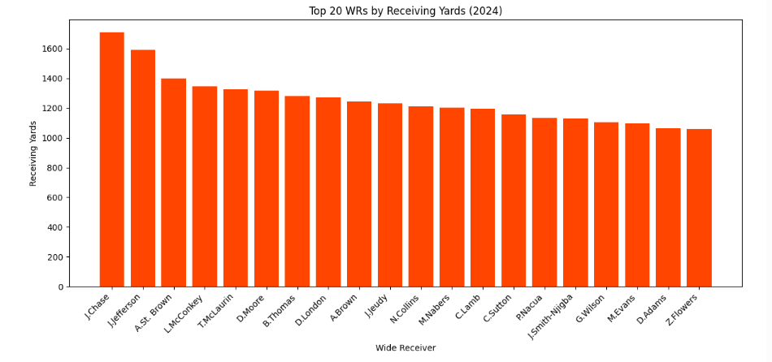
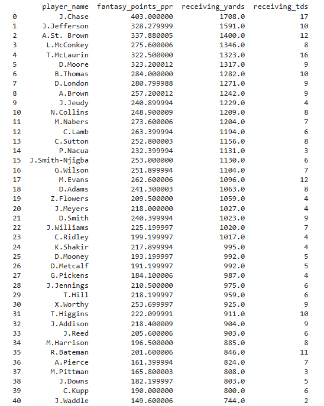
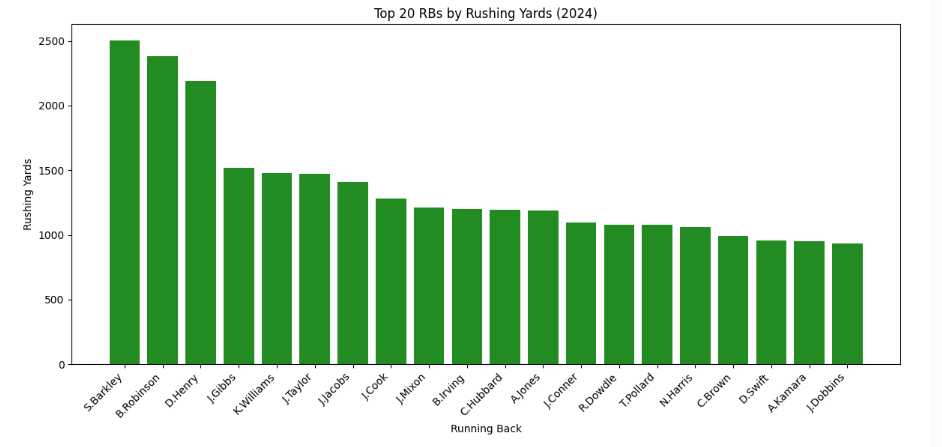
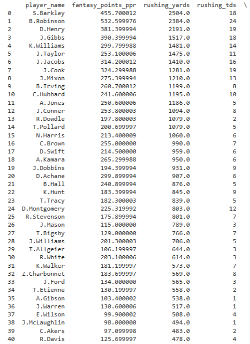

Project Overview
   This project invloved collecting, analyzing, and visualizing NFL player statistics across multiple seasons to generate predictive insights for awards such as MVP, Offensive Player of the Year, and Defensive Player of the Year.
Skills Learned
- Data analysis using Python
- Data manipulation with pandas and NumPy
- Data visualization using matplotlib
- Machine learning model evaluation